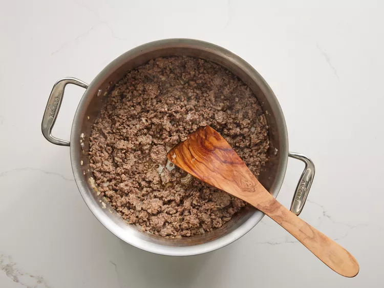

Making lasagna can be time-consuming, but the results are well worth the wait. You'll find a detailed ingredient list and step-by-step instructions in the recipe below, but let's go over the basics:
Ingredients
1 pound sweet Italian sausage
¾ pound lean ground beef
½ cup minced onion
2 cloves garlic, crushed
1 (28 ounce) can crushed tomatoes
2 (6.5 ounce) cans canned tomato sauce
2 (6 ounce) cans tomato paste
½ cup water
2 tablespoons white sugar
4 tablespoons chopped fresh parsley, divided
1 ½ teaspoons dried basil leaves
1 ½ teaspoons salt, divided, or to taste
1 teaspoon Italian seasoning
½ teaspoon fennel seeds
¼ teaspoon ground black pepper
12 lasagna noodles
16 ounces ricotta cheese
1 egg
¾ pound mozzarella cheese, sliced
¾ cup grated Parmesan cheese
Lasagna ingredients
Everyone adores this lasagna recipe because it's incredibly customizable, so you can easily alter the ingredient list to suit your needs. If you want to stay true to the original recipe, though, these are the ingredients you'll need to add to your grocery list:
Meat: This super meaty lasagna has sweet Italian sausage and lean ground beef.
Onion and garlic: An onion and two cloves of garlic are cooked with the meat to add tons of flavor.
Tomato products: You'll need a can of crushed tomatoes, two cans of tomato sauce, and two cans of tomato paste.
Sugar: Two tablespoons of white sugar add subtle sweetness and enhance the flavor of the sauce.
Spices and seasonings: This lasagna recipe is flavored with fresh parsley, dried basil leaves, salt, Italian seasoning, fennel seeds, and black pepper.
Lasagna noodles: Use store-bought or homemade lasagna noodles.
Cheeses: Parmesan, mozzarella, and ricotta cheese make this lasagna extra decadent.
Egg: An egg helps bind the ricotta so it doesn't ooze out of the lasagna when you cut into it.
How to Make Lasagna Step-By-Step
Here's a very brief overview of what you can expect when you make homemade lasagna:
Make the meat sauce.
Cook the noodles.
Make the ricotta mixture.
Layer the lasagna according to the recipe instructions.
Cover with foil and bake.
Let the lasagna rest before serving.
How to Layer Lasagna
The detailed layering instructions can be found in the recipe below, but this is the order you'll follow:
Meat sauce
Noodles
Ricotta mixture
Mozzarella slices
Meat sauce
Parmesan cheese
Repeat the layers, then top with the remaining Parmesan.
How Long to Cook Lasagna
The assembled lasagna should take about 50 minutes to cook in an oven preheated to 375 degrees F. Cover it with foil for the first 25 minutes, then let it cook uncovered for the final 25 minutes. Also, it's important to let the lasagna rest at room temperature for about 15 minutes before you cut into it.
What to serve with lasagna
Wondering what goes with lasagna? We've got you covered. Check out our other recipes for delicious serving inspiration. These are a few other ideal dishes you can serve:
Two-Ingredient Garlic Knots
Arugula-Fennel Salad
Balsamic Grilled Zucchini
How to Reheat Lasagna
You can use the microwave to reheat lasagna if you're in a pinch or short on time, but be aware that it will change the texture of the noodles. The best way to reheat lasagna is in the oven. Simply cover the leftovers with foil and bake at 350 degrees F for about half an hour, or until it's heated through and the sauce is bubbly.
How to Freeze Lasagna
If you're planning to freeze lasagna, it's best to cook it in a foil baking dish. Allow the casserole to cool, then cover the whole thing in at least one layer of storage wrap. Wrap it again in aluminum foil to prevent freezer burn. Freeze for up to three months.
How to Reheat Frozen Lasagna
Thaw the frozen lasagna in the refrigerator overnight, then follow the reheating instructions above. If you don't have time to thaw in the fridge, you can reheat it from frozen — just make sure to add a few minutes to the cook time to ensure the dish is heated through.
Directions
Step 1
Gather all your ingredients.
Step 2
Cook sausage, ground beef, onion, and garlic in a Dutch oven over medium heat until well browned.

Step 3
Stir in crushed tomatoes, tomato sauce, tomato paste, and water. Season with sugar, 2 tablespoons parsley, basil, 1 teaspoon salt, Italian seasoning, fennel seeds, and pepper. Simmer, covered, for about 1 ½ hours, stirring occasionally.
Step 4
Bring a large pot of lightly salted water to a boil. Cook lasagna noodles in boiling water for 8 to 10 minutes. Drain noodles, and rinse with cold water.
Step 5
In a mixing bowl, combine ricotta cheese with egg, remaining 2 tablespoons parsley, and 1/2 teaspoon salt.
Step 6
Preheat the oven to 375 degrees F (190 degrees C).
Step 7
To assemble, spread 1 ½ cups of meat sauce in the bottom of a 9x13-inch baking dish. Arrange 6 noodles lengthwise over meat sauce, overlapping slightly. Spread with 1/2 of the ricotta cheese mixture. Top with 1/3 of the mozzarella cheese slices. Spoon 1 ½ cups meat sauce over mozzarella, and sprinkle with 1/4 cup Parmesan cheese.
Step 8
Repeat layers, and top with remaining mozzarella and Parmesan cheese. Cover with foil: to prevent sticking, either spray foil with cooking spray or make sure the foil does not touch the cheese.
Step 9
Bake in the preheated oven for 25 minutes. Remove the foil and bake for an additional 25 minutes.